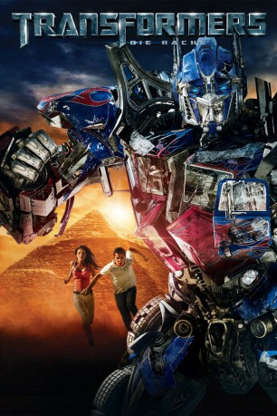

#435 Transformers 2 - Die Rache
Alternativ: Transformers: Revenge of the Fallen
Auszeichnungen: für 1 Oscars nominiert
 
 IMDB-Wertung: 6.0 / 10
IMDB-Wertung: 6.0 / 10  Metascore: 35
Metascore: 35 
Nachdem Sam Witwicky die Welt mit Hilfe der gutmütigen Autobots vor den bösartigen Decepticons gerettet hat, freut er sich auf ein normales Leben. Als er aufs College geht, lässt er nicht nur Freundin Mikaela zurück, sondern auch Roboter-Kumpel Bumblebee. Doch bald wird Sam von seltsamen Visionen heimgesucht. Erneut steht ein Kampf der außerirdischen Roboter bevor, bei dem das Schicksal der Menschheit auf dem Spiel steht. Sam scheint den Schlüssel zu ihrer Rettung in der Hand zu halten, doch diesmal bekommen es er, Mikaela und die Autobots mit einem noch mächtigeren Gegner zu tun...
Jahr: 2009
Dauer: 150 Minuten
FSK: 12
Land: USA Studio: Paramount PicturesTonspuren: DD5.1 - ,
Untertitel: Deutsch,
Auflösung: 1080p (1920x800) Größe: 15564 MB
Genre: Action, Sci-Fi, Abenteuer
Regisseur:  Michael Bay
Michael Bay
Drehbuch: Ehren Kruger, Roberto Orci, Alex Kurtzman
Soundtrack: Steve Jablonsky
Darsteller:
Datei: X:\6-Hexalogie(A-Z)\Transformers\Transformers 2 - Die Rache (2009, FSK12, 1920x800).mkv seit 21.02.2015
Festplatte: HD Collection-3(N-Z)-6(A-Z)
 Es gibt insgesamt 12 Filme in der Gruppe '6-Hexalogie(A-Z)\Transformers'
Es gibt insgesamt 12 Filme in der Gruppe '6-Hexalogie(A-Z)\Transformers'